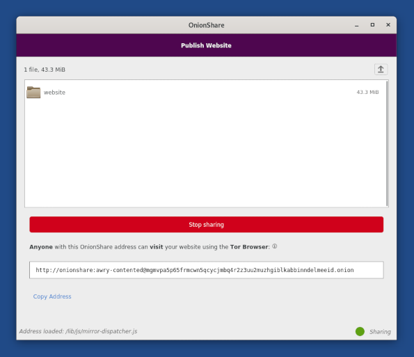
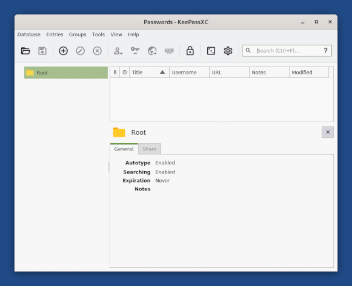

Tor Connection assistant
Tails 4.20 completely changes how to connect to the Tor network from Tails.
After connecting to a local network, a Tor Connection assistant helps you connect to the Tor network.

This new assistant is most useful for users who are at high risk of physical surveillance, under heavy network censorship, or on a poor Internet connection:
It protects better the users who need to go unnoticed if using Tor could look suspicious to someone who monitors their Internet connection (parental control, abusive partner, school or work network, etc.).
It allows people who need to connect to Tor using bridges to configure them without having to change the default configuration in the Welcome Screen.
It helps first-time users understand how to connect to a local Wi-Fi network.
It provides feedback while connecting to Tor and helps troubleshoot network problems.
We know that this assistant is still far from being perfect, even if we have been working on this assistant since February. If anything is unclear, confusing, or not working as you would expect, please send your feedback to tails-dev@boum.org (public mailing list).
This first release of the Tor Connection assistant is only a first step. We will add more improvements to it in the coming months to:
Save Tor bridges to the Persistent Storage (#5461)
Help detect when Wi-Fi is not working (#14534)
Detect if you have to sign in to the local network using a captive portal (#5785)
Synchronize the clock to make it easier to use Tor bridges in Asia (#15548)
Make it easier to learn about new Tor bridges (#18219, #15331)
Changes and updates
Update OnionShare from 1.3.2 to 2.2.
This major update adds a feature to host a website accessible from a Tor onion service.

Update KeePassXC from 2.5.4 to 2.6.2.
This major update comes with a redesign of the interface.

Update Tor Browser to 10.5.2.
Update Thunderbird to 78.11.0.
Update Tor to 0.4.5.9.
Update the Linux kernel to 5.10.46. This should improve the support for newer hardware (graphics, Wi-Fi, and so on).
Rename MAC address spoofing as MAC address anonymization in the Welcome Screen.
Fixed problems
Automatic upgrades
Made the download of upgrades and the handling of errors more robust. (#18162)
Display an error message when failing to check for available upgrades. (#18238)
Tails Installer
Made the display of the Reinstall button more robust. (#18300)
Make the Install and Upgrade unavailable after a USB stick is removed. (#18346)
For more details, read our changelog.
Known issues
Automatic upgrades are broken from Tails 4.14 and earlier.
To upgrade from Tails 4.14 or earlier, you can either:
Do a manual upgrade.
Fix the automatic upgrade from a terminal. To do so:
Start Tails and set up an administration password.
In a terminal, execute the following command:
torsocks curl --silent https://tails.boum.org/isrg-root-x1-cross-signed.pem \ | sudo tee --append /usr/local/etc/ssl/certs/tails.boum.org-CA.pem \ && systemctl --user restart tails-upgrade-frontendThis command is a single command that wraps across several lines. Copy and paste the entire block at once and make sure that it executes as a single command.
Approximately 30 seconds later, you should be prompted to upgrade to the latest version of Tails. If no prompt appears, you might already be running the latest version of Tails.
See the list of long-standing issues.
Get Tails 4.20
To upgrade your Tails USB stick and keep your persistent storage
Automatic upgrades are broken from Tails 4.14 and earlier. See the known issue above.
Automatic upgrades are available from Tails 4.14 or later to 4.20.
You can reduce the size of the download of future automatic upgrades by doing a manual upgrade to the latest version.
If you cannot do an automatic upgrade or if Tails fails to start after an automatic upgrade, please try to do a manual upgrade.
To install Tails on a new USB stick
Follow our installation instructions:
The Persistent Storage on the USB stick will be lost if you install instead of upgrading.
To download only
If you don't need installation or upgrade instructions, you can download Tails 4.20 directly:
What's coming up?
Tails 4.21 is scheduled for August 10.
Have a look at our roadmap to see where we are heading to.